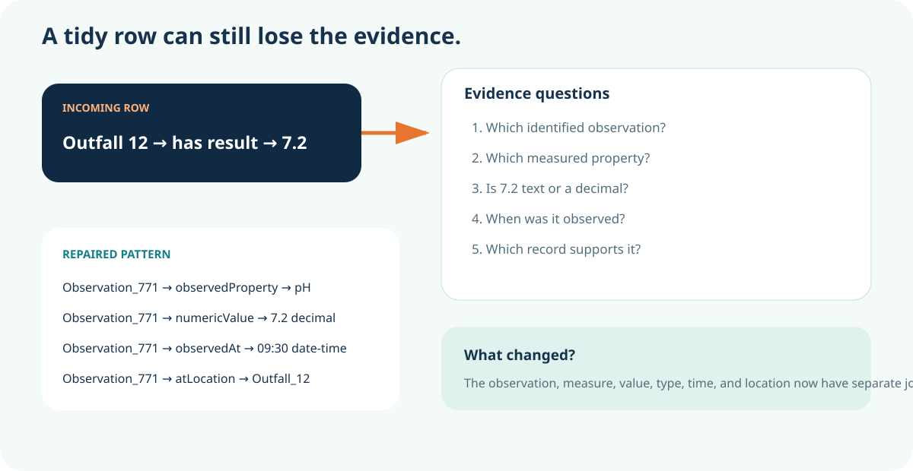
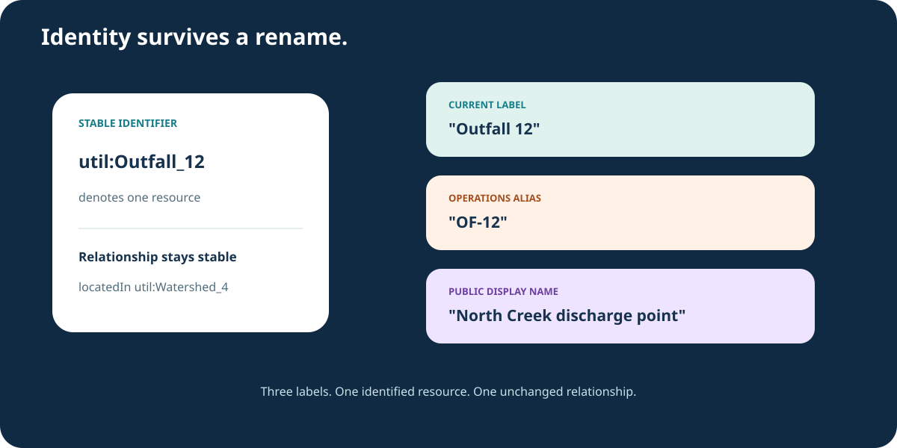
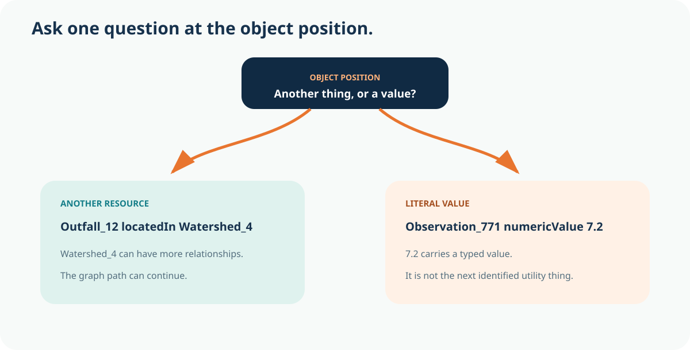
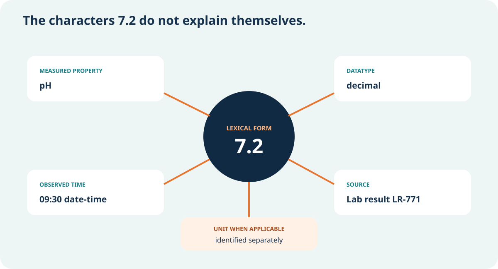
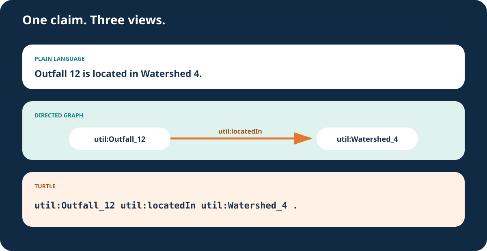

Outfall 12 locatedIn Watershed 4
What kind of object is Watershed 4?
Learn what belongs in each RDF position, then repair statements that look plausible but lose identity, direction, or value meaning.
Misconception we will change: A triple is merely a three-column row whose cells may contain any convenient text.
A wastewater laboratory result reaches an overflow-response dashboard as "Outfall 12 | has result | 7.2." The row is tidy. The claim is not. Is Outfall 12 the monitored asset or a sampling location? Is 7.2 pH, dissolved oxygen, turbidity, or another measure? Is the value text or a number? When was it observed, and which record supports it?
RDF gives us three positions, but it does not rescue careless choices inside those positions. Precision begins when identity, relationship direction, and value type are explicit enough for another system and another person to inspect.

Choose the strongest answer, then check it. The feedback explains the boundary.
People need readable names. Machines need stable identity. A utility may call the same asset "Outfall 12," "OF-12," or "North Creek discharge point" in different interfaces. Those labels help people, but they should not silently become three different things.
An IRI is an identifier used in RDF. Prefixes such as `util:` are compact writing conveniences for longer IRIs. A label is a separate statement about the identified resource. If the label changes, the resource does not have to change.

Choose the strongest answer, then check it. The feedback explains the boundary.
The subject and predicate identify resources. The object may identify another resource, or it may be a literal value. That fork changes what the statement can do next.
In "Outfall 12 locatedIn Watershed 4," the object is another identified resource that can participate in more relationships. In "Observation 771 numericValue 7.2," the object is a literal value. A literal can carry a datatype or language information, but it is not the next reusable utility thing in a graph path.

For each statement, decide whether the object should identify another resource or carry a literal value.
What kind of object is Watershed 4?
What kind of object is 7.2?
What kind of object is Crew Alpha?
What kind of object is the timestamp?
The characters 7.2 can be stored as text, interpreted as a decimal number, or embedded in a sentence. Those are different data choices. A datatype states how the lexical form maps to a value. Measurement meaning usually also needs an identified measure, a unit relationship when applicable, observation time, and source.
Do not pack every detail into one string such as "pH 7.2 at Outfall 12 on Tuesday." Separate statements preserve the observation, measured property, numeric value, time, location, and source so each can be queried and reviewed.

Select every item the bounded task needs. Leave irrelevant or unauthorized material outside the packet.
The workbench contains four statements that look reasonable at first glance. One reverses direction. One uses a display label as identity. One overloads a value into free text. One stores a number without a numeric datatype.
Diagnose the first defect and choose the smallest repair that preserves the intended claim. A good repair makes the evidence more precise without pretending that the triple proves the source is current or authoritative.
Identify what failed, choose the smallest repair, review the explanation, and retry until all four statements pass.
Watershed_4 locatedIn Outfall_12
"North Creek discharge point" locatedIn Watershed_4
Observation_771 result "pH 7.2 at 09:30"
Observation_771 numericValue "7.2"
Choose the strongest answer, then check it. The feedback explains the boundary.
RDF is an abstract data model. Turtle is one concrete syntax for writing RDF graphs. Prefix declarations shorten IRIs, semicolons can reuse a subject, and typed-literal notation makes values readable. Those conveniences do not create a new graph.
Read the translation strip from the plain-language claim to the directed graph and then to Turtle. The same subject, predicate, and object survive all three views. On the common route, you need to recognize the correspondence, not memorize every Turtle rule.

Choose the strongest answer, then check it. The feedback explains the boundary.
Transfer the method to a stormwater inspection and a water work order. Identify the utility things, choose a directed predicate, decide whether the object is a resource or literal, type each value, and name the source.
Your Reviewed Triple Deck contains five statements with different evidence jobs. It must include a resource-to-resource relationship, a typed number, a date or time, a label separated from identity, a source note, and one boundary explaining what the deck does not prove.
Choose the strongest answer, then check it. The feedback explains the boundary.
Record five reviewed triples, identifier conventions, typed values, source, reviewer note, and the boundary of what the deck proves.
An IRI is an identifier. It may be designed so it can be looked up on the Web, but RDF uses it first as a globally scoped name for a resource.
In ordinary asserted RDF triples, the subject identifies a resource rather than being a literal. The object position is where literal values appear.
No. A label is human-readable text describing an identified resource. Labels can change or vary by language while the identifier remains stable.
Not usually. A datatype distinguishes values such as decimal, date, boolean, or string. Measurement units are commonly represented through additional vocabulary and relationships.
No. Turtle helps people read and exchange RDF, but the graph model is the underlying meaning. This lesson teaches recognition before syntax fluency.
No. It makes the claim precise. Source, time, authority, mapping, validation, and review still govern trust.
Outfall 12, Observation 771, values, and work orders are instructional examples. RDF term, triple, IRI, literal, datatype, and Turtle explanations are grounded in W3C specifications. Advanced RDF 1.2 triple terms remain outside this common route.
See the concepts, sources, competency, and evidence boundary behind this module.
Discuss which relationship your utility repeatedly rebuilds by hand. Community discussion is not governed evidence.
Complete every position check, both syntax-workbench mechanisms, the transfer decision, and the Reviewed Triple Deck.